Table of Contents
- Table of Contents
- Cable connections
- Product Descriptions
- Third-party products
- Operating Manual
- ALIEN ECU Communication manual
- ALIEN ECU Graphical User Interface(GUI)
- Logic Diagrams
- Contact Informations
- History
- Notice
Cable connections
Block diagrams
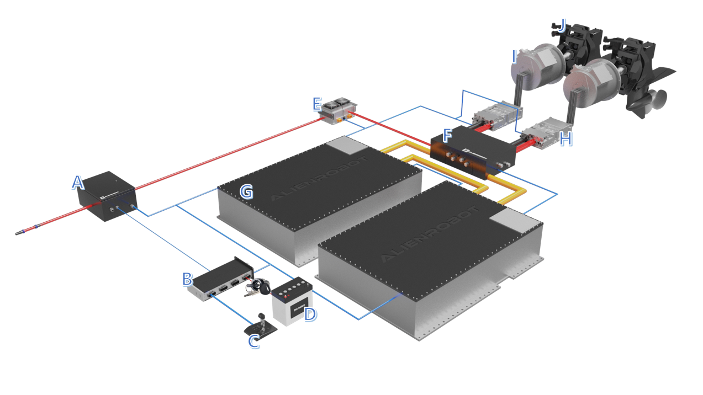 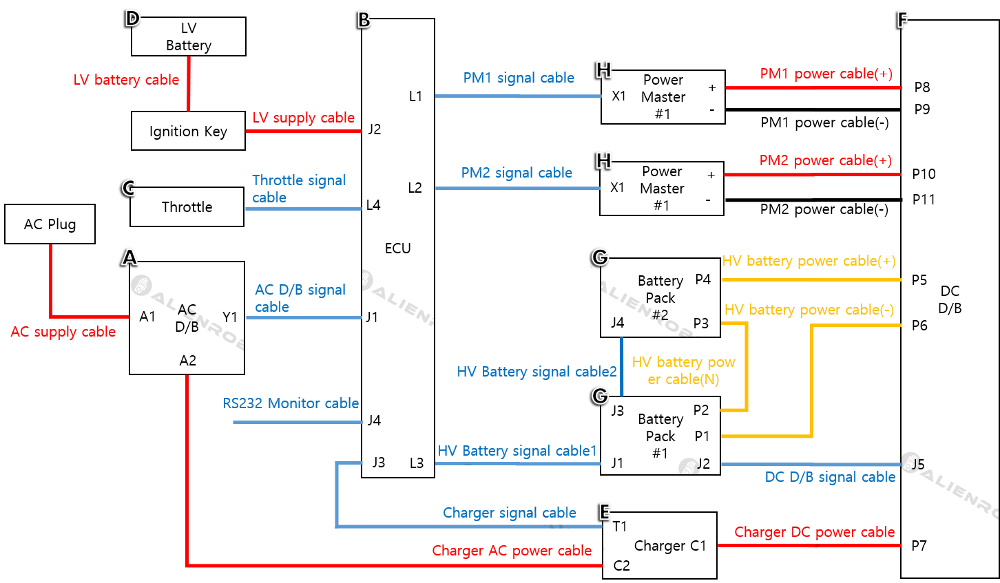
Cable descriptions
각 장치들의 극성과 통신 사양 규격(CAN, RS-232)에 따라서 구성하십시오.
| Name | Comment |
|---|---|
| AC supply cable | 3 core cable(220Vac, 35A, earth) |
| LV battery cable | 4pin twisted pair cable(24V) |
| LV supply cable | 4pin twisted pair cable(24V) |
| Throttle signal cable | 18pin twisted pair shielded cable(5V) |
| AC D/B signal cable | 4pin twisted pair shielded cable(24V) |
| RS232 Monitor cable | 9pin RS232 D-SUB cable(RS232 to USB cable) |
| PM1,2 signal cable | 12pin twisted pair shielded cable(24V) |
| PM1,2 power cable(+) PM1,2 power cable(-) HV battery power cable(+) HV battery power cable(N) HV battery power cable(-) |
Voltage rating : 1000V, Ampacity : 380A, Temperautre range : -55°C ~ 150°C, Recommended : EXRAD® XLE 150 SAE Shielded |
| HV Battery signal cable1 | 12pin twisted pair shielded cable |
| HV Battery signal cable2 | 8pin twisted pair shielded cable |
| Charger signal cable | 4pin twisted pair shielded cable |
| Charger AC power cable | 3 core cable(220Vac, 30A, earth) |
| Charger DC power cable | 2 core cable(Voltage rating : 600V, Ampacity : 30A) |
| DC D/B signal cable | 8pin twisted pair shielded cable |
Product Descriptions
ALIEN AC Distribution Board (A)
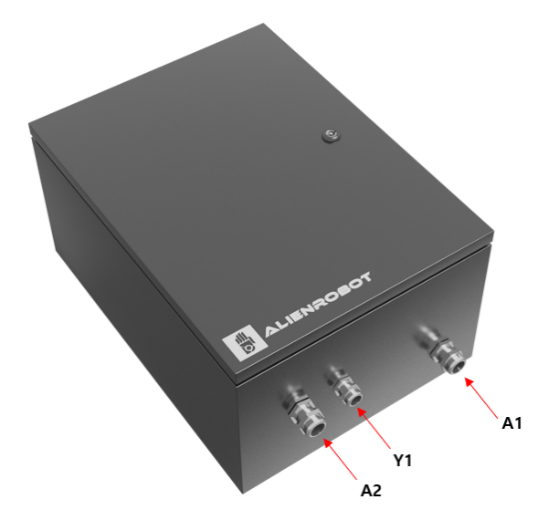 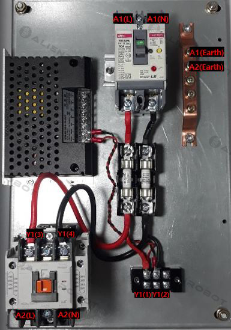
ALIEN AC D/B Power Cable connectionss
위 그림과 같이 배전반 뚜껑을 개봉하고, 고전압 케이블을 반드시 정확한 위치에 연결하십시오. AC 릴레이 배선의 경우, AC Line(A2(L,N))과 코일(Y1(3,4))에 유의하여 연결하십시오. 케이블들을 Cable connections 페이지에 기술된 것과 동일하게 연결하였다면, ECU 는 AC배전반 내부의 릴레이를 조작하여 배터리를 과충전으로부터 보호합니다. 또한, AC 배전반은 누전차단기와 퓨즈를 보호회로로 포함하고 있습니다. AC 배전반 내부의 누전차단기와 퓨즈의 상태를 상시 점검하십시오.
Danger
누전차단기를 조작할 때에는, 안전을 위해서 AC 플러그를 제거한 상태에서 조작할 것을 권고합니다. 퓨즈나 누전차단기의 이상이 발생하는 원인은 다음과 같습니다. - AC배전반 내부의 퓨즈가 소실된 경우, 충전기의 고장으로 과전류가 발생했을 가능성이 있습니다. - 누전차단기가 내려간 경우, 충전기나 배터리팩, 혹은 케이블에서 누전 가능성이 있습니다.
ALIEN AC D/B A1 pin descriptions
| Pin number | Name | Comment |
|---|---|---|
| 1 | A1(L) | 220Vac,35A Live line(From AC Plug to AC D/B) |
| 2 | A1(N) | 220Vac,35A Null line(From AC Plug to AC D/B) |
| 3 | A1(Earth) | Earth Ground(From AC Plug to AC D/B) |
ALIEN AC D/B A2 pin descriptions
| Pin number | Name | Comment |
|---|---|---|
| 1 | A2(L) | 220Vac,30A Live line(From AC D/B to Charger) |
| 2 | A2(N) | 220Vac,30A Null line(From AC D/B to Charger) |
| 3 | A2(Earth) | Earth Ground(From AC D/B to Charger) |
ALIEN AC D/B Y1 pin descriptions
| Pin number | Name | Comment |
|---|---|---|
| 1(Green) | SMPS 24V | Positive Power Supply |
| 2(Brown) | SMPS GND | Negative Power Supply (0V) |
| 3(White) | AC Relay Coil + | AC Relay ON/OFF Coil (+) |
| 4(Yellow) | AC Relay Coil - | AC Relay ON/OFF Coil (-) |
ALIEN DC Distribution Board (F)
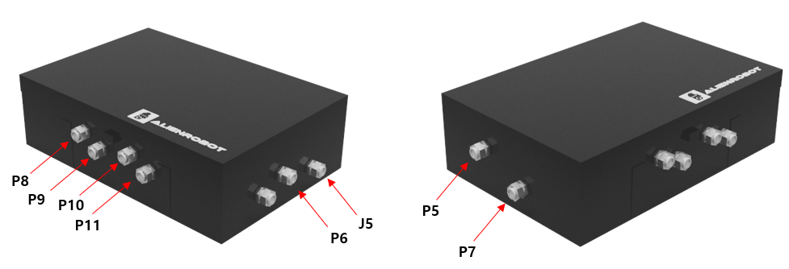 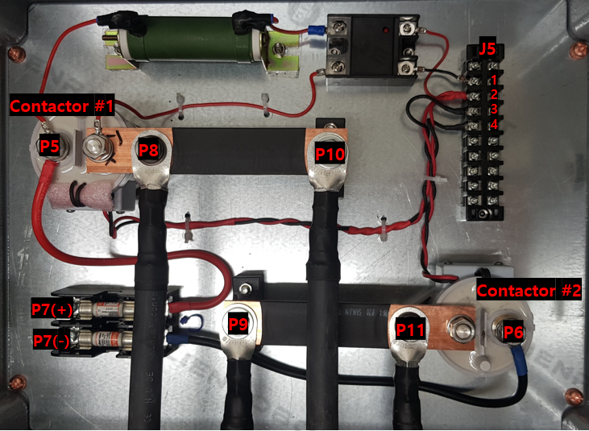
ALIEN DC D/B Power Cable connectionss
위 그림과 같이 배전반 뚜껑을 개봉하고, 고전압 케이블을 반드시 정확한 위치에 연결하십시오. - P5 : 배터리 팩(G)의 양극(P4)을 DC D/B 내부 Contactor#1의 양극에 연결 - P6 : 배터리 팩(G)의 음극(P1)을 DC D/B 내부 Contactor#2의 음극에 연결 - P7+ , P7- : 각각 충전기 DC 출력(C1)의 양극과 음극에 연결 - P8 : 모터 제어기 DC 입력단자의 양극에 연결 - P9 : 모터 제어기 DC 입력단자의 음극에 연결 - P10 : 모터 제어기 DC 입력단자의 양극에 연결 - P11 : 모터 제어기 DC 입력단자의 음극에 연결
전력케이블과 마찬기로 신호 케이블을 반드시 그림과 하기 테이블의 위치에 연결하십시오.
ALIEN DC D/B J5 pin descriptions
| Pin number | Name | Comment |
|---|---|---|
| 1 | EDERS | Pre-charging relay ON/OFF signal |
| 2 | 24V_ctrl | Control Power Supply(24V) |
| 3 | EDER | Positive DC line contactor #1 ON/OFF signal |
| 4 | EDER_ | Negative DC line contactor #2 ON/OFF signal |
| 5 | DIS_POWER | Positive Power Supply(24V) |
| 6 | GND | Negative Power Supply(0V) |
| 7 | Reserved | |
| 8 | Reserved |
ALIEN ECU(B)
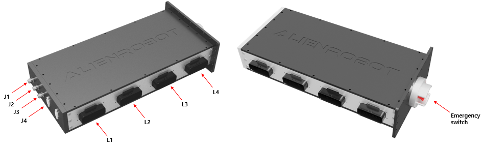 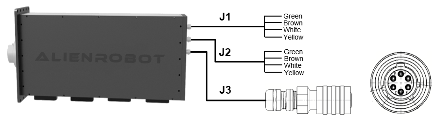
비상 스위치 : DC D/B와 AC D/B 내부의 모든 Contactor와 Relay를 턴-오프 하는 용도로 배터리 팩 및 교류전원을 차단하는 용도로 사용합니다. 비상 시, 혹은 테스트가 필요한 상황 이외에는 사용하지 마십시오.
- 비상 시 : 비상 스위치를 ECU방향으로 누르면 비상 스위치는 턴-오프 상태로 유지되고, 모든 D/B의 차단기는 턴-오프 됩니다.
- 복구 시 : 비상 스위치를 RESET 방향으로 회전하면 비상 스위치는 턴-온 상태로 유지되고, 모든 D/B의 차단기가 정상 동작합니다.
ALIEN ECU의 커넥터는 4개의 일반 커넥터와 4개의 특수 커넥터로 구성됩니다. 특수 커넥터들은 외부장비의 사양에 따라서 케이블이 사전 제작되어 ECU와 연결된 상태로 제공되므로 유의하십시오.
- 일반 커넥터 : TE 776163-1(35 position)
- 특수 커넥터 :
- J1 : AC D/B signal cable(종단 커넥터 미제공)
- J2 : LV supply cable(종단 커넥터 미제공)
- J3 : Charger signal cable (종단 커넥터 제공 : XXC103-EV-S6TC)
- J4 : RS232 Monitor cable(RS232 to USB 케이블)
ALIEN ECU L1 & L2 pin descriptions
| Pin number | Name | Comment |
|---|---|---|
| 1 | VIN_P | Positive Power Supply(24V) |
| 2 | #STOP_1 | Active Low, STOP @<1.2V, RUN @>4.65V, Pulling one #STOP down |
| 3 | POWER_ON | Active High, Turn ON @>7.4V, Turn OFF @<5.8V |
| 4 | VIN_N | Negative Power Supply (0V) |
| 5 | #STOP_2 | Active Low, STOP @<1.2V, RUN @>4.65V, Pulling one #STOP down stops the inverter |
| 6 | VP5V_OUT1 | +5V/200mA output for external sensors, software control |
| 7 | SIG_SHIELD | For Signal cable shield, Cable shield should only be connected in one location to prevent ground loop |
| 8 | CANH_A | CAN bus A, isolated(Functional isolation <100VDC) |
| 9 | CANL_A | CAN bus A, isolated(Functional isolation <100VDC) |
| 10 | CAN_A_GND | GND for CAN bus A |
| 11 | Reserved | |
| 12 | CAN_A_SHIELD | For CAN cable shield, Cable shield should only be connected in one location to prevent ground loop |
| 13~35 | Reserved | Preparing to add features |
ALIEN ECU L3 pin descriptions
| Pin number | Name | Comment |
|---|---|---|
| 1 | DIS_POWER | Positive Power Supply(24V) |
| 2 | GND | Negative Power Supply (0V) |
| 3 | CHA_POWER | Positive Power Supply(24V) |
| 4 | CHA_ENA_SIG | Charge enable signal Input |
| 5 | CLEAR_ERR | BMS error clear signal Output |
| 6 | EDER_ | Contactor#2 on/off signal Output |
| 7 | EDER | Contactor#1 on/off signal Output |
| 8 | EDERS | Pre-charging contactor(Contactor #3) on/off signal Output |
| 9 | SIG_SHIELD | For Signal cable shield, Cable shield should only be connected in one location to prevent ground loop |
| 10 | CANH_B | CAN bus B, isolated(Functional isolation <100VDC) |
| 11 | CANL_B | CAN bus B, isolated(Functional isolation <100VDC) |
| 12 | CAN_B_SHIELD | For CAN cable shield, Cable shield should only be connected in one location to prevent ground loop |
| 13~35 | Reserved | Preparing to add features |
ALIEN ECU L4 pin descriptions
| Pin number | Name | Comment |
|---|---|---|
| 1 | TH1_POWER | Positive Power Supply (5V) |
| 2 | TH2_POWER | Positive Power Supply (5V) |
| 3 | TH1_GND | Negative Power Supply (0V) |
| 4 | TH1_OUT | Throttle Speed Reference signal Input |
| 5 | TH2_OUT | Throttle Speed Reference signal Input |
| 6 | TH2_GND | Negative Power Supply (0V) |
| 7~23 | Reserved | Preparing to add features |
| 24 | GND | Ground |
| 25 | FOR1 | Lever Forward signal Input |
| 26 | GND | Ground |
| 27 | NEU1 | Lever Neutral signal Input |
| 28 | GND | Ground |
| 29 | REV1 | Lever Reverse signal Input |
| 30 | GND | Ground |
| 31 | FOR2 | Lever Forward signal Input |
| 32 | GND | Ground |
| 33 | NEU2 | Lever Neutral signal Input |
| 34 | GND | Ground |
| 35 | REV2 | Lever Reverse signal Input |
ALIEN ECU J1 pin descriptions
| Pin number | Name | Comment |
|---|---|---|
| 1(Green) | SMPS 24V | Positive Power Supply(24V) |
| 2(Brown) | SMPS GND | Negative Power Supply (0V) |
| 3(White) | AC Relay Coil + | AC Relay ON/OFF Coil (+) |
| 4(Yellow) | AC Relay Coil - | AC Relay ON/OFF Coil (-) |
ALIEN ECU J2 pin descriptions
| Pin number | Name | Comment |
|---|---|---|
| 1(Green) | LV 24V | Positive Power Supply(24V) |
| 2(Brown) | LV GND | Negative Power Supply (0V) |
| 3(White) | Ignition key 24V | Ignition key Positive Power Supply |
| 4(Yellow) | Reserved |
ALIEN ECU J3 pin descriptions
| Pin number | Name | Comment |
|---|---|---|
| 1(A) | CANL_B | CAN bus B, isolated(Functional isolation <100VDC) |
| 2(B) | CANH_B | CAN bus B, isolated(Functional isolation <100VDC) |
| 3(C) | CAN_B_GND | GND for CAN bus B |
| 4~6 | Reserved |
ALIEN ECU J4 pin descriptions
| Pin number | Name | Comment |
|---|---|---|
| 1 | Reserved | |
| 2 | RS232_RXD | RS-232 Recieve signal pin |
| 3 | RS232_TXD | RS-232 Transmit signal pin |
| 4 | Reserved | |
| 5 | GND | Signal GND |
| 6~9 | Reserved |
ALIEN Battery pack(G)
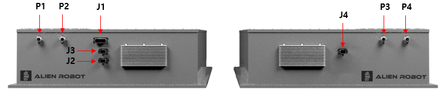
- 고전압 케이블용 그랜드: CRMPE-M25-140180
- 신호선 커넥터 :
- J1 : HV Battery signal cable1, TE 776163-1(35 position)
- J2 : DC D/B signal cable, Molex 19429-0011(8 position)
- J3 : HV Battery signal cable2, Molex 19429-0011(8 position)
- J4 : HV Battery signal cable2, Molex 19429-0011(8 position)
Third-party products
ALIEN Inboard system과 호환되는 외부 제품 목록을 나타냅니다. 각 제품들의 자세한 구동방법 및 매뉴얼은 각 제조사를 홈페이지를 통해서 다운로드 하십시오. 본 설명서의 내용대로 구성에 어려움이 있으시다거나 타 제품과 연결을 희망하시는 경우에는 당사에 문의하시기 바랍니다.
Throttle (C)
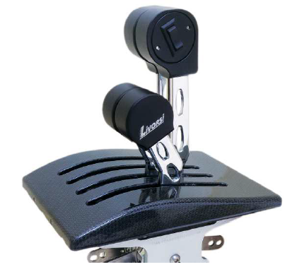
쓰로틀의 자체의 결함으로 인한 문제는 ALIEN ECU에서 검출 불가능 합니다. 또한, 쓰로틀에서 발생하는 전기적 쇼트나 역극성이 발생하는 경우, ALIEN ECU에 심각한 전기적 손상을 야기할 수 있습니다. 쓰로틀의 결함이 없는지 가능한 자주 점검하십시오.
- 제조사 홈페이지 : http://www.livorsi.com
- 당사 제품과 연결 방법 : ALIEN ECU L4 pin descriptions
- 출고 시 기본 설정 값 : TH1_OUT, 혹은 TH2_OUT 핀에 +5V 인가 시, CAN통신으로 회전속도 지령값(COB-ID=2002을 3800RPM으로 인가합니다. 다음 수식을 참고하세요. : Speed reference[RPM] = TH1_OUT[V] / 5 * 3800
Note
쓰로틀의 속도 지령값이 실제 모터의 회전속도를 의미하는 것은 아닙니다. 실제 모터의 회전속도는 모터 드라이브측에서 배터리의 전압, 모터의 상태, 외부 환경을 고려하여 자동적으로 조절됩니다. 모터드라이브의 설정에 따라서 회전속도 지령값과 실제 회전속도 측정값은 다를 수 있습니다.
Low Voltage(LV) Battery (D)
100Ah 이상의 용량을 가진 납축전지나 리튬 계열의 배터리를 사용을 권장합니다. 당사의 Inboard system 제어 전원은 모두 24V 배터리와 연결되어 있습니다. 안전한 사용을 위해서 24V 배터리에는 당사의 제품과 타사 제품을 혼용으로 사용하지 마십시오. 24V 배터리의 충전/방전 관리를 위한 별도의 시스템은 당사에서 제공하지 않습니다.
- 당사 제품과 연결 방법 : ALIEN ECU J2 pin descriptions
- 배터리 권장 사양
- 정격 전압 : 20V 이상, 28V 이하
- 정격 출력 전류 : 5A 이상
- 순간 출력 전류 : 10A 이상
- 전류 용량 : 100Ah 이상
- 충전 관리 : CC/CV, Floating 충전
Charger (E)
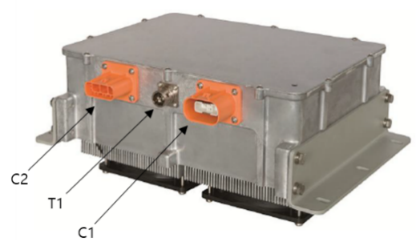
- 케이블 연결 외, 추가적인 설정은 필요하지 않습니다.
- 제조사 홈페이지 : http://www.tccharger.com
- 당사 제품과 연결 방법 :
Motor Drive(H) & Motor(I)
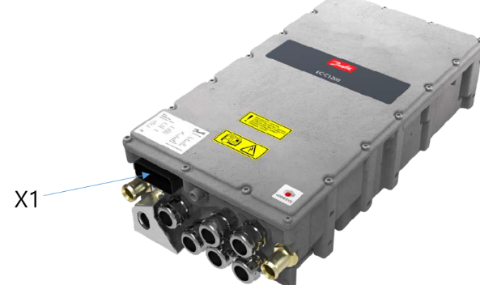
- 케이블 연결 외, 추가적인 설정이 필수적입니다.
- 제조사 홈페이지 : https://www.danfoss.com
- 당사 제품과 연결 방법 :
Operating Manual
당사 제품의 구동 방법을 상세하게 설명합니다. 본 장의 지침을 따라서 운전하기 전에 Product Description과 Third-party products에 기술된 모든 제품들이 Cable connections에 기술된 바와 같이 올바르게 연결되었는지 반드시 확인하여 주십시오.
Caution
Danger
기본적인 주의 사항
- 감전 위험 : 배터리 팩 출력 단자의 공칭 전압은 537.6V 입니다. 이 제품들은 통상적인 고전압 범위에 속하며 적절한 자격을 갖춘 작업자에 의해서 다루어 져야 합니다.
- 과충전/과방전 위험 : 배터리 팩은 최대 604.8V까지 충전 할 수 있으며 최대 420V까지 방전 될 수 있습니다. 충/방전 시에는 이 전압 범위를 초과하지 않도록 적절한 전자장비들을 이용하여 조취를 취해야 합니다. 과충전/과방전을 방지하기 위해서 ALIEN ECU는 상시 연결하여 사용되어야 합니다.
- 보관/운반 : 본 배터리 팩에 내장된 배터리 셀은 UL1642, UL62133 and CAN/CSA-E62133:13표준을 준수합니다. 또한, 배터리 셀의 동작온도와 보관온도를 준수하는 범위 내에서만 3000cycle 이상의 충/방전이 보장되오니 보관 방법에 유의하십시오.
- 온도범위 : 충전 시(0°C ~ 45°C), 방전 시(-20°C ~ 55°C), 보관온도(-10°C ~ 45°C)
- 폭발 / 화재 위험 : 연결 플러그 근처의 단락 회로는 피하십시오. 사양을 초과하는 과 방전/과 충전/과 방전 전류에 주의하십시오. 화재 시에는 거품 형 소화기 D 또는 CO2를 사용하십시오.
Dangeer
사용자 취급 주의 사항
- 허가된 작업자 외에는 배터리 팩의 하우징을 개봉하지 마십시오.
- 비, 눈, 액체 스프레이, 습기 또는 결로에 배터리를 노출시키지 마십시오.
- 단락 또는 극성 반전은 배터리 팩에 심각한 손상을 야기합니다.
- 장치 및 전선. 배터리와 연결된 장치 사이의 퓨즈는 극성 반전에 대해서 어떤 것도 방지하지 못합니다. 결과적으로 극성 반전은 배터리팩의 영구적 손상을 야기합니다.
- 배터리 팩의 출력단자는 기술 사양과 호환되는 적절한 퓨즈나 차단기(ex. ALIEN DC D/B)를 통해서 부하와 연결해야 합니다.
- 배터리 팩의 연결 및 보호는 각 표준 및 기술에 따라 신중하게 관리되어야 합니다.
- 전원이 켜져 있는 상황에서 배터리팩의 고전압 단자를 접속/해제 하지 마십시오.
- 적어도 일년에 한 번 이상 연결선을 점검하십시오. 손상된 와이어나 느슨한 연결부 등은 발견 즉시 수정되어야 합니다.
- 당사의 배전반은 오토모티브 규격을 만족하는 차단기와 퓨즈 그리고 IP65/IP67등급의 엔클로저가 사용된 고 내구성의 제품입니다. 그러나, 침수/누전으로 인한 고장에 대해서는 당사에서 책임지지 않습니다.
- 당사의 ECU가 배터리 팩이 연결된 상황에서는 배터리 팩의 과방전/과충전을 상시 체크합니다. 다만, ALIEN ECU의 전원이 인가되지 않은 경우, 예컨데 자연방전 상황에서는 배터리 팩의 상태를 점검 불가하므로 사용자에 의한 관리가 필수적입니다. ECU에 의해서 배터리 팩의 상태를 점검하고, 고장을 판별하기 위해서는 배터리 팩의 충전 주기는 통상적인 3주에 1회 이상을 권장합니다.
Charging sequence
- 시동키를 제거하여 주십시오.
- 시동키를 제거해야 더 안전하게 충전할 수 있습니다.
- 쓰로틀을 정지상태, 레버를 중립(Neutral) 상태로 조절하십시오.
- 쓰로틀이 정지상태가 아니거나 레버가 중립상태가 아니라면 ECU에서는 현재 운전상태로 판단하여 충전을 시작하지 않습니다.
- AC 배전반의 A1 단자로 220Vac, 60Hz 전원을 인가합니다.
- AC 전원의 사양은 220Vac,60Hz, 6.6kW입니다. 안전한 전원 공급을 위해서 적절한 차단기와 절연 등급의 제품을 사용하십시오.
- Step 2까지 문제없이 진행 되었다면 ECU는 BMS로부터 배터리의 상태 및 충전 가능 여부에 대한 정보를 수신합니다. 나머지 아래의 과정들은 ECU에 의해서 자동으로 시작됩니다.
- ALIEN ECU는 배터리 팩에 내장된 BMS로부터 수신한 배터리 충전 상태를 바탕으로 고장 진단과 충전 가능 여부를 판단합니다.
- 배터리 충전 상태에 대한 파라미터는 배터리의 충전량(SOC), 현재 온도, 셀별 전압입니다.
- 배터리 충전 상태는 3.5절의 ECU 통신 프로토콜을 통해서 사용자가 확인할 수 있습니다.
- 배터리 충전 상태는 ALIEN ECU를 통해서만 접근 가능합니다.
- “충전이 불가한 상황”이 아니라면 ALIEN ECU는 AC 배전반(A) 내부의 AC RELAY(Y1(3,4번 핀))를 턴-온하여 충전기에 AC 전원을 공급합니다.
- 충전이 불가한 상황 이란 배터리 팩의 상태가 Technical specification(충전량, 온도, 셀별 전압 범위)를 벗어난 경우를 의미하며, ALIEN ECU에 의해 충전전력이 차단됩니다. 배터리 팩의 고장이나 환경적 문제를 의미하므로 즉시, 충전을 중지하고, 당사에 신속하게 연락하여 주십시오.
- ECU의 비상 스위치를 턴-온함으로써 사용자가 충전을 중지할 수 있습니다.
- “충전이 불가한 상황”이 아니라면 ALIEN ECU는 충전기는 공급받은 AC전원을 사용하여 배터리를 충전합니다.
- 배터리 충전 상태는 ALIEN ECU에서 지속적으로 모니터링 됩니다.
Discharging sequence
- AC전원이 인가되지 않은 상태에서 쓰로틀을 정지상태, 레버를 중립(Neutral) 상태로 조절하십시오.
- 3가지 조건에 만족하지 않는다면, ECU에서는 현재 운전상태로 판단하여 방전을 시작하지 않습니다.
- 기본 옵션 사용자 : ECU는 BMS와 모터 드라이브로부터 배터리의 상태 및 방전 가능 여부에 대한 정보를 수신합니다. 나머지 아래의 과정들은 ECU에 의해서 자동으로 시작됩니다.
- 시동키를 ON으로 설정하고, 모니터링 프로그램을 통해 방전이 가능한지 확인하여 주십시오.
- Ignition Key state가 Acitve이면 전원이 제대로 공급되고 있음을 의미합니다.
- Discharge Mode : Active, 모터 드라이브 Communication : Active이면 방전이 가능하고, 모터 드라이브와의 통신이 정상임을 의미합니다.
- Throttle/Lever must be zero position : Active는 쓰로틀과 레버의 위치를 정지상태와 중립상태로 설정해야 함을 의미합니다.
- Global Error가 Active일 경우, 진단 프로그램을 실행하여 Error Code를 확인하여 주십시오. 진단 프로그램은 모니터링 프로그램을 종료 후 실행하시기 바랍니다. Step 3. 쓰로틀 속도조절 레버를 전진 방향, 혹은 후진 방향으로 조절하여 방전을 시작합니다.
- 기본 옵션 사용자 : 쓰로틀 레버의 위치는 모터 드라이브에 인가되는 속도 지령입니다. 레버의 위치가 전진방향이나 후진방향의 양 끝단에 위치한다면 모터 드라이브에 인가되는 최대속도 지령은 3800RPM 입니다.
- ALIEN ECU는 모터 드라이브와 BMS의 정보를 바탕으로 방전 가능 여부를 판단하므로, 장비에 이상이 발생하였다면 모터가 정상 구동하지 않습니다. 다음과 같은 순서로 장비들을 점검하신 이후에도 특별한 이상이 발견되지 않는다면 즉시 당사에 문의시기 바랍니다.
- 배터리의 충전상태(Pack SOC), 방전가능모드(Discharge Mode), 방전가능전력(Max.Power) 확인
- 쓰로틀 정지상태, 레버 중립상태로 설정
- ALIEN ECU의 BMS와 모터 드라이브 오류 출력코드 확인1
ALIEN ECU Error code
충전 시퀸스나 방전 시퀸스 도중에 BMS나 모터 드라이브에서 문제가 발생하는 경우, ALIEN ECU에서 DC 배전반의 차단기와 AC 배전반의 차단기를 강제로 턴-오프하여 전체 시스템의 직류/교류 전원공급을 모두 중단합니다. ALIEN ECU에서 출력하는 오류코드는 다음과 같습니다.
Danger
오류코드를 임의로 클리어 하는 시도를 하지 마십시오. 각 오류코드는 고장을 야기하는 상황을 의미합니다. 오류코드가 발견되는 즉시, 모든 가동을 멈추고(쓰로틀을 정지상태, 레버를 중립상태) 당사에 문의하십시오.
| Pin number | Comment |
|---|---|
| 0C0A | 특정 셀 전압이 너무 높음 |
| 0E0A | 특정 셀 전압이 너무 낮음 |
| 100A | 팩온도가 너무 높음 |
| CA0A1 | 충전포트가 연결된 상태에서 시동키 ON |
| 800A1 | 내부저항이 비교적 높은 셀 존재 |
| 0A0A | BMS 내부 온도센서 문제 |
| 0B0A | Software 문제 |
| 090A | Hardware 문제 |
| 120A | Balancing 문제 |
| 9C0A | 온도센서 문제 |
| A60A | 절연파괴 문제 |
| 00C1 | CAN 통신 문제 |
| 020A | Pack 상태 문제 |
| 050A | 입력전압 문제 |
| 060A2 | 충전전류 초과(충,방전 금지됨) |
| 070A2 | 방전전류 초과(충,방전 금지됨) |
| 080A2 | 충전 ON/OFF 문제(충전 금지됨) |
| C00A2 | 전류센서 문제(충,방전 금지됨) |
| 0F0A | 셀 전압 측정 에러 |
| 0D0A2 | 셀 전압 측정 에러(충,방전 금지됨) |
| 040A2 | 셀 전압 측정 에러(충,방전 금지됨) |
| 1F0A2 | 셀 전압 측정 에러(충,방전 금지됨) |
| FA0A2 | 셀 전압 측정 에러(충,방전 금지됨) |
1 에러가 아닌 알림
2 충,방전 구동을 금지시키는 치명적인 에러.
ALIEN ECU Communication manual
ALIEN ECU를 통해서 배터리의 상태와 외부장치들의 상태를 “모니터링” 하기 위한 통신 프로토콜을 기술합니다.
- 기본 제공되는 통신 옵션은 RS-232 방식입니다. 다른 방식을 원하시는 경우에는 당사에 문의하십시오.
- ALIEN ECU는 “모니터링”과 독자적으로 충전과 방전이 가능합니다. 즉, 모니터링 장치의 소프트웨어적인 결함이 발생하더라도 충전과 방전에는 영향이 없으므로 전체 시스템이 안전하게 보호1 됩니다.
- 기본 제공되는 그래픽 유저 인터페이스(GUI)는 테이블 형태로 출력됩니다. 아래의 RS-232 규격을 참고하여 모니터링 장치를 Alien-ECU의 J4 커넥터 에 연결하십시오.
- 1 start bit
- 1 stop bit
- 8 data bit
- Parity/CRC check : none
- Flow control : none
- Baudrate : 115200 bps
당사에서 제공하는 유저 인터페이스를 사용하여 기본적인 설정 및 모니터링이 가능합니다. 혹은, RS-232 protocol을 사용하여 사용자가 직접 어플리케이션을 작성2 할 수 있습니다.
1 RS-232 표준 규격을 벗어난 전기적 쇼크나 노이즈가 인가되지 않는 경우만을 고려합니다.
2 본 기술서에 있는 내용은 단순 참고용입니다. 독자적인 어플리케이션을 작성을 위한 방법이나 기술 지원이 필요하시다면 당사에 문의하여 주십시오. 통신 방식은 변경이 가능합니다.
ALIEN ECU RS-232 Protocol
ALIEN ECU의 RS-232 통신 포맷은 외부 장치로부터 ECU에 모니터링할 데이터의 요청 포맷과 요청에 대한 ECU의 응답 포맷으로 나뉘어집니다. 모니터링 장치가 ECU에 모니터링 하고자하는 데이터의 ID LIST의 요청 패킷 전송하면, ECU는 요청받은 ID들의 데이터들을 응답 패킷을 전송합니다.
Warning
요청 패킷의 안정적인 전송 주기(period)는 0.2초 이상입니다. 이보다 빠른 속도로 전송을 요청하시는 경우, 통신이 불안정해 질 수 있으니 주의하십시오.
Data request packet
각 ID는 8비트이며, 필요한 ID 리스트를 순차적으로 전송합니다.
| Number of byte | Comment |
|---|---|
| 1 | 0xB1 |
| 2 | 요청하는 ID 갯수 |
| 3 | ID1 |
| 4 | ID2 |
| ... | ... |
| n-3 | IDk-1 |
| n-2 | IDk |
| n-1 | Checksum = ~(ID1 + ID2 + ... + IDk-1 + IDk) |
| n | 0x55 |
Data response packet
각 ID의 DATA는 16비트입니다. 각 ID, 각 ID의 상위 8비트(DATA H)와 하위 8비트(DATA L)을 순차적으로 전송합니다.
| Number of byte | Comment |
|---|---|
| 1 | 0xD1 |
| 2 | ID1 |
| 3 | ID1 DATA H |
| 4 | ID1 DATA L |
| 5 | ID2 |
| 6 | ID2 DATA H |
| 7 | ID2 DATA L |
| ... | ... |
| n-7 | IDk-1 |
| n-6 | IDk-1 DATA H |
| n-5 | IDk-1 DATA L |
| n-4 | IDk |
| n-3 | IDk DATA H |
| n-2 | IDk DATA L |
| n-1 | Checksum = ~(ID1 + ID1 DATA H + ID1 DATA L + ... + IDk + IDk DATA H + IDk DATA L) |
| n | 0x55 |
ALIEN ECU RS-232 ID LISTS
당사에 직접 문의하여 주십시오.
ALIEN ECU CANOPEN Protocol
ECU는 기본적으로 두개의 모터(Motor 1, Motor 2)를 지원합니다. 각 COB-ID를 CANOPEN Process ID 규격과모터 드라이브 제조사에서 제공하는 Communication manual을 참고하여 정확하게 설정하십시오.
Note
각 ID와 이름(Name)에 대한 상세한 설명은 모터 드라이브 제조사의 매뉴얼에 기술된 내용과 동일합니다.
Motor 1 CANOPEN Transmit Process ID LIST
| COB-ID(HEX) | ID(HEX) | Name |
|---|---|---|
| 195 | 2042 | Active Fault ID |
| 195 | 20A0 | System and Control status word |
| 195 | 20A1 | Limit status word |
| 196 | 2008 | DC Voltage, V |
| 196 | 2009 | Actual speed, RPM |
| 196 | 200A | Actual torque, Nm |
| 196 | 2018 | DC current, A |
| 197 | 2040 | Junction temp(highst) |
| 197 | 2050 | Highst base plate temp |
| 197 | 2043 | Fault word 1 |
| 198 | 2044 | Fault word 2 |
| 198 | 2045 | Fault word 3 |
Motor 1 CANOPEN Recieve Process ID LIST
| COB-ID(HEX) | ID(HEX) | Name |
|---|---|---|
| 215 | 2070 | Speed limit, max |
| 215 | 2071 | Speed limit, min |
| 215 | 2072 | Torque limit, max |
| 215 | 2073 | Torque limit, min |
| 216 | 2078 | Power limit, motoring, positive |
| 216 | 2079 | Power limit, generating, negative |
| 216 | 2002 | Speed reference, RPM |
| 216 | 2090 | Command word |
| 217 | 207E | Speed control gain |
| 217 | 207F | Speed control integral time, ms |
| 217 | 2080 | Speed reference ramp time, ms |
| 218 | 2020 | Enable Control |
| 218 | 2021 | Run command |
| 218 | 2022 | Reset fault |
Motor 2 CANOPEN Transmit Process ID LIST
| COB-ID(HEX) | ID(HEX) | Name |
|---|---|---|
| 296 | 2042 | Active Fault ID |
| 296 | 20A0 | System and Control status word |
| 296 | 20A1 | Limit status word |
| 297 | 2008 | DC Voltage, V |
| 297 | 2009 | Actual speed, RPM |
| 297 | 200A | Actual torque, Nm |
| 297 | 2018 | DC current, A |
| 298 | 2040 | Junction temp(highst) |
| 298 | 2050 | Highst base plate temp |
| 298 | 2043 | Fault word 1 |
| 299 | 2044 | Fault word 2 |
| 299 | 2045 | Fault word 3 |
Motor 2 CANOPEN Recieve Process ID LIST
| COB-ID(HEX) | ID(HEX) | Name |
|---|---|---|
| 316 | 2070 | Speed limit, max |
| 316 | 2071 | Speed limit, min |
| 316 | 2072 | Torque limit, max |
| 316 | 2073 | Torque limit, min |
| 317 | 2078 | Power limit, motoring, positive |
| 317 | 2079 | Power limit, generating, negative |
| 317 | 2002 | Speed reference, RPM |
| 317 | 2090 | Command word |
| 318 | 207E | Speed control gain |
| 318 | 207F | Speed control integral time, ms |
| 318 | 2080 | Speed reference ramp time, ms |
| 319 | 2020 | Enable Control |
| 319 | 2021 | Run command |
| 319 | 2022 | Reset fault |
ALIEN ECU Graphical User Interface(GUI)
준비 중...
Logic Diagrams
본 장의 회로도들은 당사 Inboard system 구성의 이해를 돕기 위한 용도로만 제공되며, 실제 구성과는 차이가 있습니다.
Alien ECU Logic Diagram
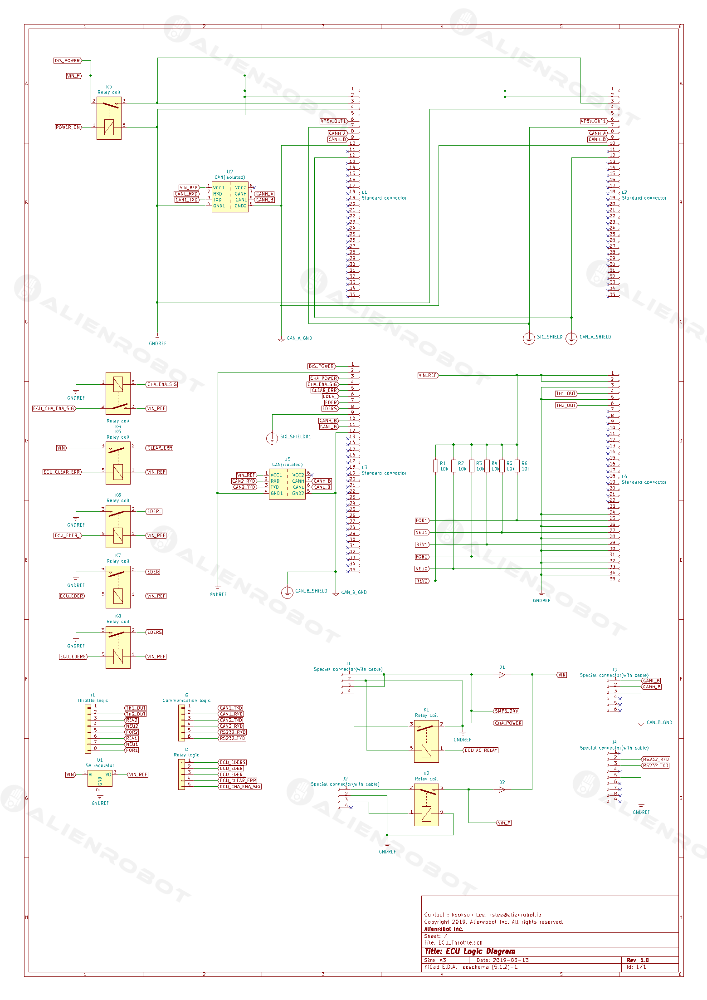
Alien Batterypack Logic Diagram
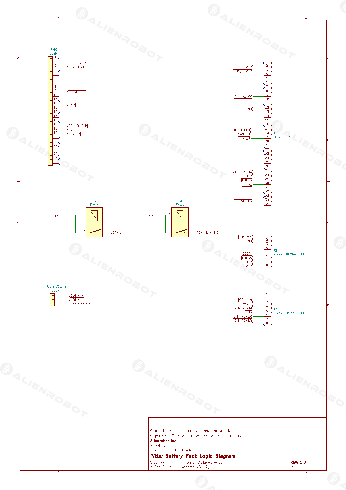
Alien AC D/B Logic Diagram
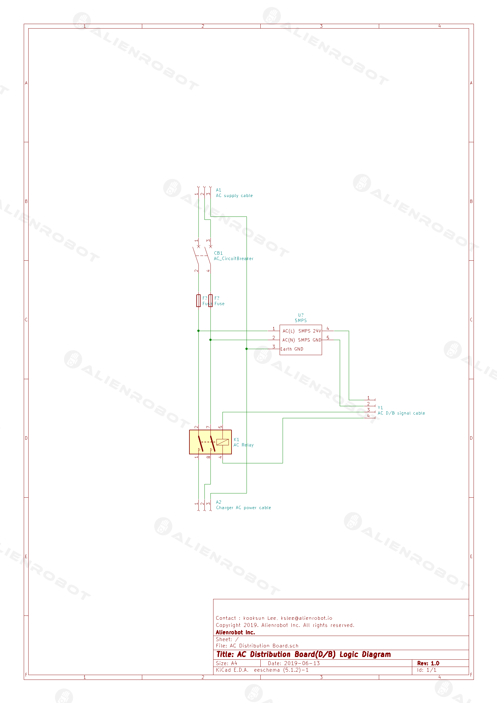
Alien DC D/B Logic Diagram
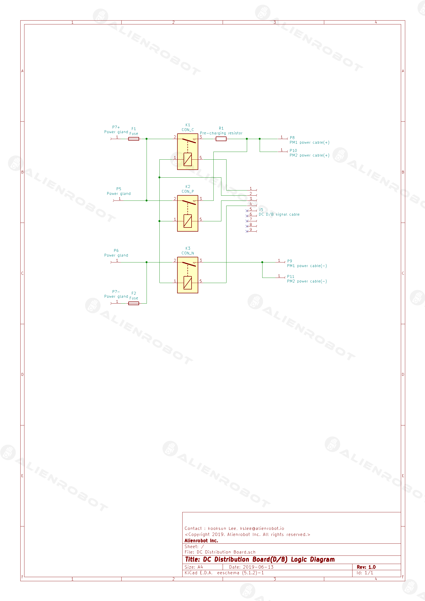
Contact Informations
- Hompage : www.alienrobot.io
- E-mail : www.alienrobot.io/contact
- Phone : 031-426-3907
History
- 2019-07-04 ALIEN ECU 사용법 업데이트
Notice
- (주)에일리언로봇은 카탈로그, 브로셔 및 기타 인쇄물에 발생할 수있는 오류에 대해 책임지지 않습니다.
- (주)에일리언로봇은 예고없이 제품을 변경할 권리가 있습니다. 이는 이미 합의 된 규격에 변경이 필요없이 그러한 변경이 가능할 경우 이미 주문한 제품에도 적용됩니다.
- 써드-파티 제품들에 대한 모든 권리와 책임은 각 제품의 제조사에게 있습니다. 자세한 내용은 각 제조사의 홈페이지를 통해서 확인하여 주십시오.